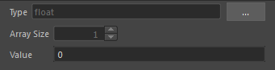

添加 value 节点
value 节点可用于设置数据类型和值。它可用于多种操作，包括：
- 为计算提供常量值。
- 强制值具有特定数据类型。如果可能，连接到
value节点输入的任何内容都将被升级为其类型，否则将出现错误。- 也可以通过单击鼠标右键并从“值类型”(Value Types)或“端口类型”(Port Types)菜单中选择类型来设置端口的数据类型。请参见设置端口类型。
- 访问向量和矩阵的分量。
默认情况下，value 节点显示其值而不是其名称，但矩阵和对象等类型除外。通过选择节点并选择“显示 > 显示节点名称”(Display > Show Node Names)，可以在显示名称和显示值之间切换。
创建 value 节点
您可以采用与任何其他节点相同的方式将 value 节点添加到图表中，具体方法是按 Tab 键并开始键入“value”。默认情况下，以这种方式添加的 value 节点的类型为 float。
或者，您可以右键单击任何未连接的输入端口或“新端口”(New port)图标，然后选择“创建值节点”(Create Value Node)。以这种方式创建 value 节点时：
端口上的任何现有值将成为
value节点的值。默认类型是端口的类型，但有几个例外情况：
- 如果端口是未解析的
auto端口，则value节点的默认类型为float。 - 如果节点由于已连接数组而自动循环，则类型是单个值，而不是数组。例如，这样可以将数组连接到
add节点，然后轻松将单个值添加到数组中的所有项目。如果默认值是一个空数组，则add节点的输出也将是一个空数组，因为自动循环基于最小数组的大小。
- 如果端口是未解析的
添加 value 节点后，可以在“参数编辑器”(Parameter Editor)中设置该节点的值，或先更改其数据类型。

更改 value 节点的数据类型
value 节点的当前类型显示在“参数编辑器”(Parameter Editor)中。进行更改：
- 单击“更多”(More)按钮 (...)。
- 选择新的类型。
如果“类型”(Type)为“数组”(array)，则可以在“参数编辑器”(Parameter Editor)中设置其大小以及所有元素的默认值。
如果“类型”(Type)为“向量”(vector)或“矩阵”(matrix)，则可以使用 + 和 - 图标访问其分量的端口。